The Evolution of the Million-Selling Home Game Consoles
Farah Maria Majdalani
From the wide success of arcade games came a new technology, one that allowed video game fanatics to play their favorite games straight from home. Home video game consoles are consoles that have to be connected to a display device, such as a television, and an external power. Despite them being less powerful than PCs, they were specifically designed to maintain higher graphics and lower memory to provide affordable prices. These consoles have proven to be relatively successful during their time of exposure despite their ups and downs. In this article, I will be enlightening you about the wondrous evolution of the most successful home gaming consoles from the oldest to the most recent.
• Atari 2600 by Atari (1977) selling 30 million units. This gaming console is acclaimed for promoting the use of “microprocessor-based hardware and games stored on ROM cartridges”. The Atari 2600 was famous for bringing arcade games, such as Pong and Pac-Man, to home consoles. It was especially successful in the conversion of the arcade hit game, Space Invaders, into the first ever cartridge bundle that “quadrupled sales of their home consoles” (High Score, Episode 1).
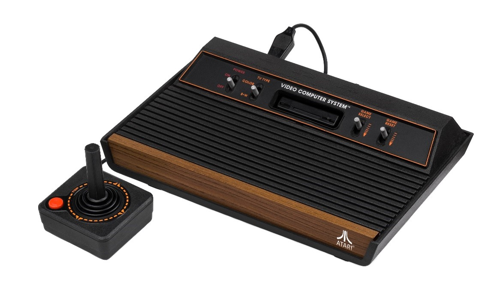
• Magnavox Odyssey 2 by Magnavox and Philips (1978) selling 2 million units. This console is the successor of the first Odyssey console by Magnavox. That first console pioneered with the first home console brought to market.
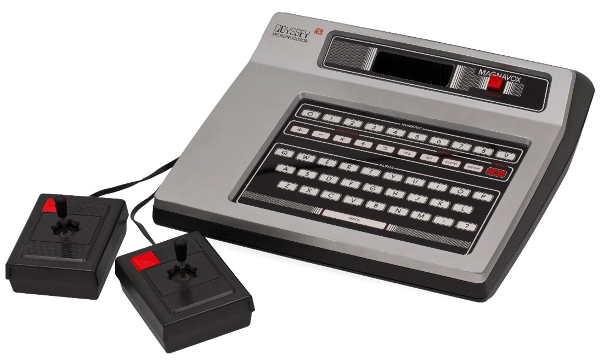
• Intellivision by Mattel (1980) selling 3 million units. The name of this console is a portmanteau2 of “intelligent television”. This gaming console had superior graphics and sound to its competitor the Atari 2600, and it was even advertised as being "the closest thing to the real thing".
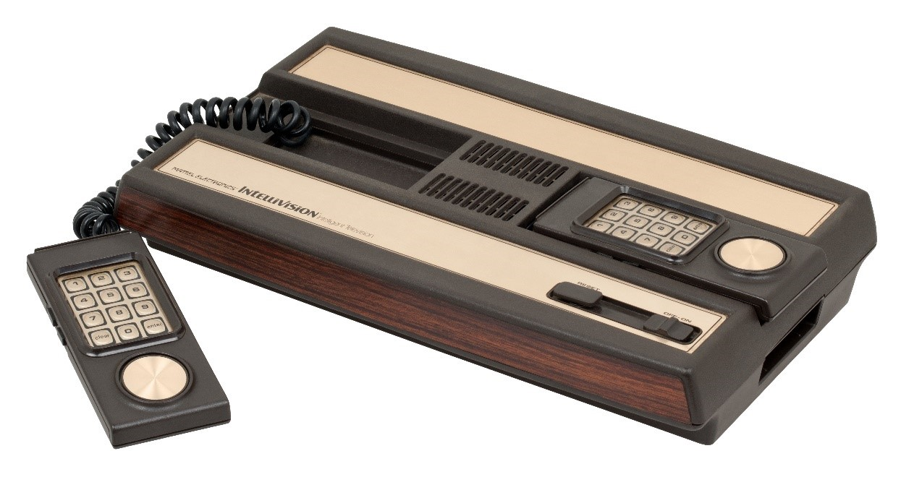
• ColecoVision by Coleco (1982) selling approximately 2 million units. This console offered a more powerful arcade experience that the Atari gaming consoles, along with the ability to upgrade the system’s hardware. Approximately 145 titles, including Nintendo’s Donkey Kong and Sega’s Zaxxon, were published as ROM cartridges, along with releasing hardware add-ons and special controllers to expand the console’s capabilities.
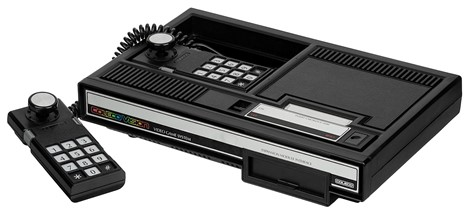
• Atari 5200 by Atari (1982) selling 1 million units. This console is a higher-end successor to the Atari 2600; however, it fell far short to its 30 million sales success. It was created to compete with the Intellivion but ended up competing with the ColecoVision.
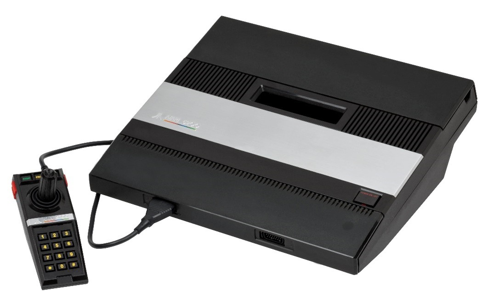
• Nintendo Entertainment System by Nintendo (1983) selling 61.91 million units. Released after the video game market crash of 1983 and popularized with through the home conversion of the arcade game Donkey Kong. This console provided a gameplay that is more similar to that of the arcade that what the other systems provided (High Score, Episode 2). The NES featured groundbreaking success with games such as Super Mario Bros. and The Legend of Zelda. It is also one of the best-selling consoles of all time.
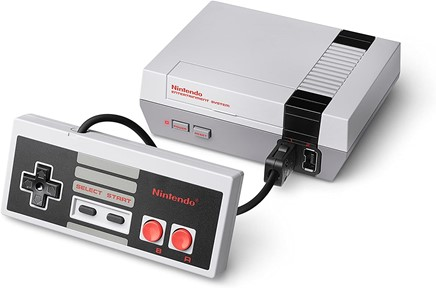
• Master System by Sega (1986) selling between 10 and 13 million units. This console was released as a competitor to the Nintendo Entertainment System. It featured newer and more improved hardware than the NES. However, it was unable to reach the latter’s success in Japan and the US, but rather reached more success in Europe and Brazil.
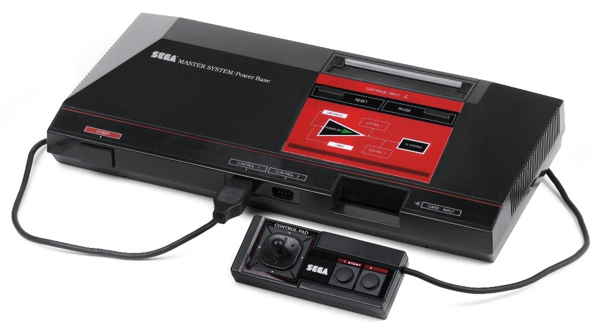
• TurboGrafx-16 by NEC and Hudson Soft (1987) selling 10 million units. It is also known as PC engine outside America. It was designed by Hudson Soft and manufactured and marketed by NEC. This console failed to break into the US market; however, due to it being released earlier in Japan, it was more successful there. It got criticism over its marketing as a 16-bit console and having the number “16” in its name when it used an 8-bit CPU like its predecessors.
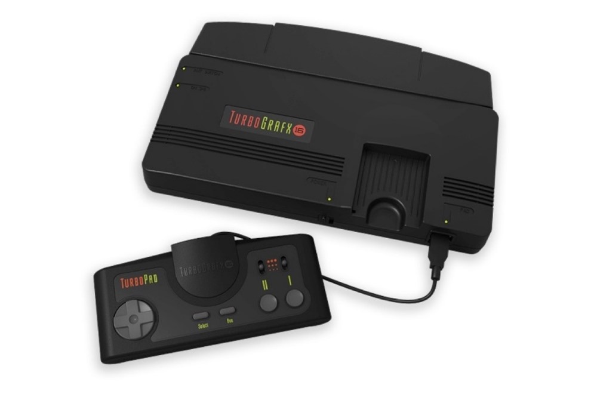
• Sega Genesis by Sega (1988) selling 35 million units. This console has a 16-bit CPU, and is the successor to the Master System. It became famous for its game series Sonic the Hedgehog, which was the most iconic game Sega ever made (High Score, Episode 4). It gave rise to a new era of competitive gaming (High Score, Episode 4). However, this console also triggered some controversies. One of the controversies was the console war with Nintendo that brought about great attention from the public. The other was the violent games controversy, for games such as Night Trap and Mortal Kombat, that led to the creation of the Videogame Rating Council.
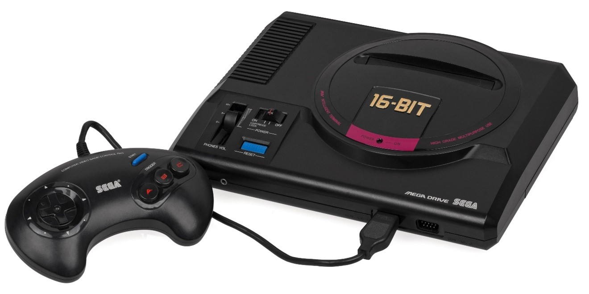
• Super Nintendo Entertainment System by Nintendo (1990) selling 49.10 million units. This console is the 16-bit successor to the 8-bit Nintendo Entertainment System. It featured advanced graphics and sound capabilities. Despite going into an intense console war with the Sega Genesis, with the latter having a two year lead to the SNES, lower prices, a larger library, and a higher age group target, this console became the best-selling console of the 16-bit era.
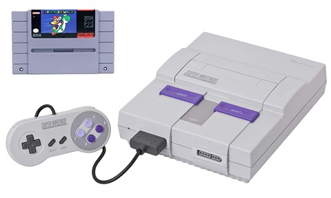
• Philips CD-i by Philips (1990) selling approximately 1 million units. This console is mainly a “digital optical disc data storage format” created as an extension of CDDA and CD-ROM, combining audio, text, and graphics. It was used for watching movies, extending PC, and also supporting video games and “edutainment”. It was Philips way to combine features from CD players and gaming consoles into one, at a much lower price than a PC with a CD-ROM drive.
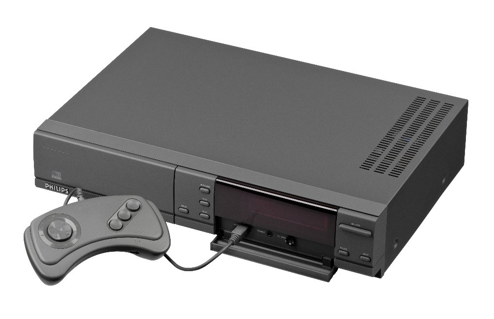
• PlayStation by Sony (1994) selling 102.49 million units. This console uses CD-ROM games instead of cartridges. It received great positive acclaims by the industry, making it the “first computer entertainment platform to ship over 100 million units”. Approximately 8,000 games were released for this console.
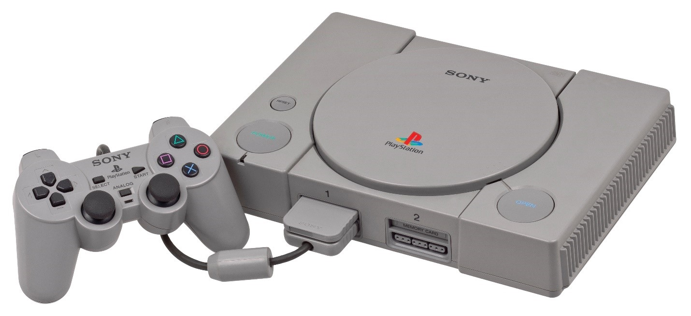
• Sega Saturn by Sega (1994) selling 9.26 million units. It was the successor to the Sega Genesis. It had a dual-CPU architecture with 8 processors and a CD-ROM format. This console was considered a failure agianst the PlayStation and the Nintendo 64, and one factor for its failure was the release of the Sonic the Hedgehog series on it.
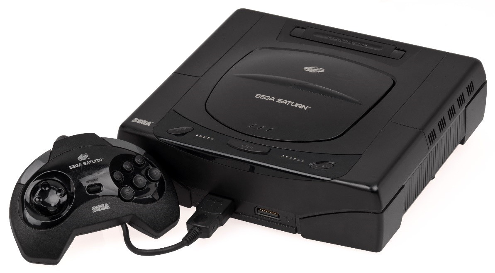
• Nintendo 64 by Nintendo (1996) selling 32.93 million units. This console was the last major home console to support the use of ROM cartriges. The number “64” in its name refered to the 64-bit processor that it supports. It was critically acclaimed and remains one of the most recognized consoles to this day.
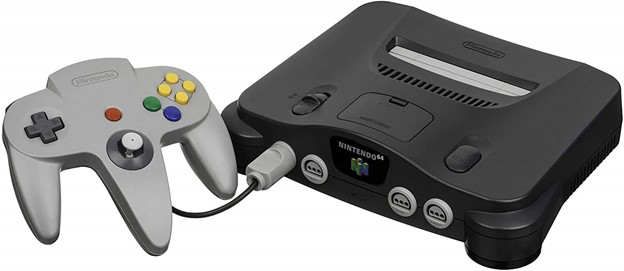
• Dreamcast by Sega (1998) selling 9.13 million units. This console was Sega’s final home console. To reduce the price of its preceding failed high-tech console, Sega Saturn, it used “off-the-shelf” components. This console suffered a short-lived success until the release of the PlayStation 2; however, some critics accaimled it for being “ahead of its time”.
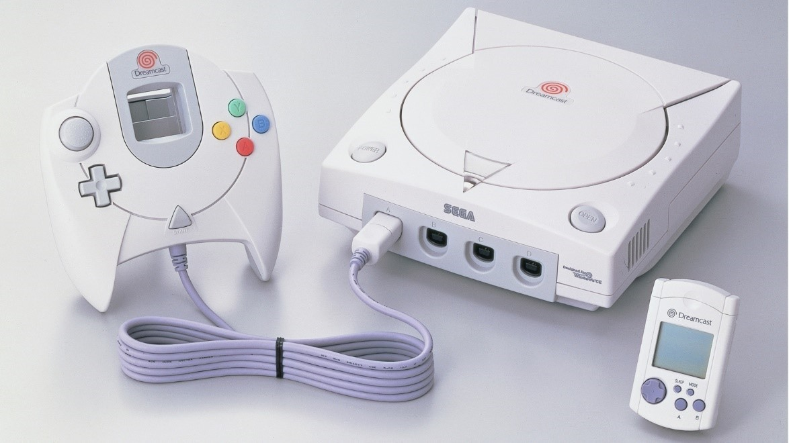
• PlayStation 2 by Sony (2000) selling approximately 155 million units. It is the successor to the original PlayStation. This console is the best selling video game console of all time, with over 3,700 games released. It had one of the longest lifespans for a console, that evern after it was discontinued, games were still being released for it.
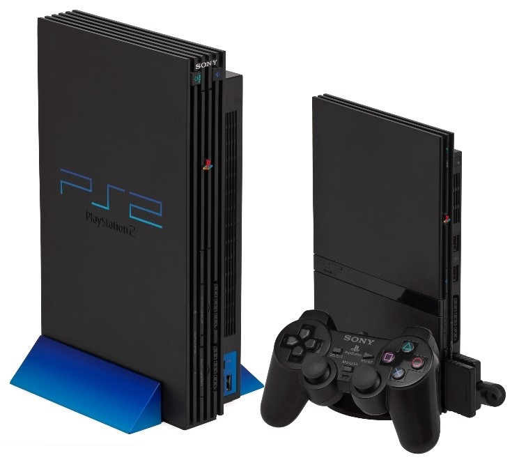
• Xbox by Microsoft (2001) selling 24 million units. This console was the first installement of the Xbox series as Microsoft’s entrypoint to the gaming industry. It had CD-ROM and DVD playback ability, as well as playing games. This console was different from its competitors for its hardware was built around that of a personal computer rather than custom game console components. It was also built-in with Internet connection via Ethernet port, and the later release of Xbox Live, which is an online multiplayer gaming service.
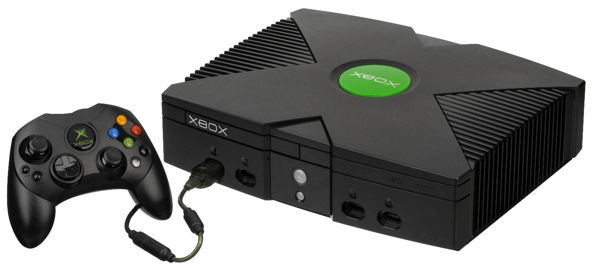
• GameCube by Nintendo (2001) selling 21.74 million units. This console is the sucessor to the Nintendo 64, with an upgraded use of optical discs in the form of miniDVD-based formats instead of cartridges. It supports limited online gaming for a small number of its games by use of a broadband. Players are also able to connect the handheld console, the GameBoy Advance, via a link cable, and be able to access exclusive in-game features while using the GBA as a second screen and controller.
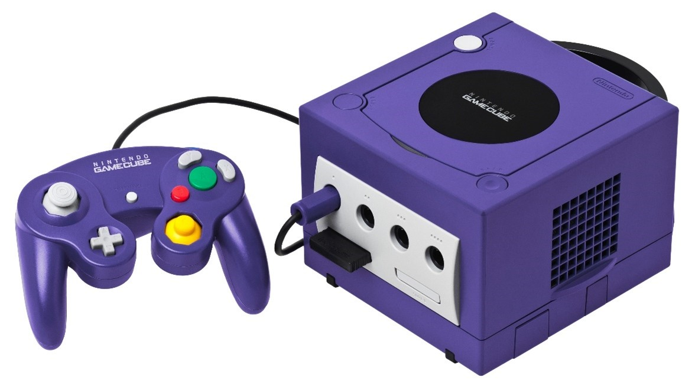
• Xbox 360 by Microsoft (2005) selling approxiately 84 million units. This console is the second installement of the Xbox series, being the successor to the original Xbox, and the highest-selling console made by an American company. It featured the online service Xbox Live, which was upgraded from the service in the original Xbox, that allowed multiplayed gaming, downloading games, and purchasing and streaming music, TV programs, and movies. This console also featured wireless controllers, expanded hard drive storage, and a Kinect motion sensing camera.
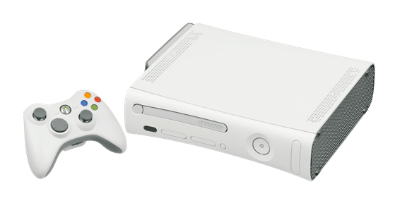
• Wii by Nintendo (2006) selling 101.63 million units. This console targeted novel gameplay instead of high-end graphics and power. It features a wireless controller, the Wii Remote, that has both motion sensing and the traditional controller capabilities. It was also the first Nintendo console to feature Internet connectivy, supporting a the digital distribution of games in the online Wii Shop Channel. This console also features connectivity with the handheld console, the Nintendo DS, for select games. It was extremely successful in its lauch, including the Wii Sports game that was considered a great game for the console.
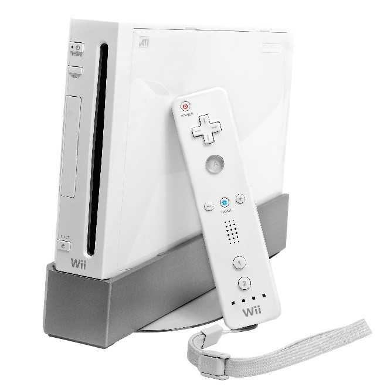
• PlayStation 3 by Sony (2006) selling approximately 87.4 million units. It is the successor to the PlayStation 2, being the first gaming console to feature Blu-ray Disc as the primary storage medium. It was also the first PlayStation to integrate social gaming services with the PlayStation Network, and also the first PlayStation to have wireless controllabilty with handheld consoles using services such as PlayStation Portable and PlayStation Vita. Upon its initial release, it received negative reviews due to it being overpriced, with complex processors, and lack of quality games. It later gained a more positive reception over time.
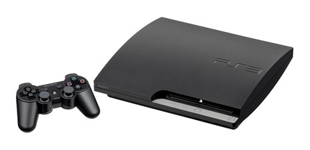
• Wii U by Nintendo (2012) selling 13.56 million units. It is the first Nintendo console to support HD graphics. This console featured a new type of controller, the Wii U GamePad, with an embedded touchscreen and traditional controls. The screen could be used as a supplimentary screen, or a could support games directly on the gamepad. Its games are backwards compatible with those of the original Wii console. It also supported online functionionality like its predecessor with the Nintendo Network and the social networking service, Miiverse.
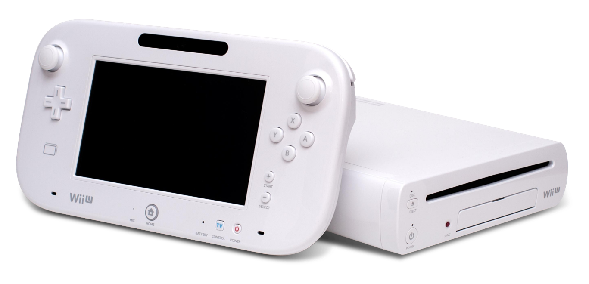
• PlayStation 4 by Sony (2013) selling 114.9 million units. It is the successor the the PlayStation 3, receiving higher critical praise for acknowledging its consumers’ needs. This console has high-end technology, with an emphasis on social interaction, like streaming online, and integration with other devices to be able to control its features remotely. An aditionaly feature to its predecessor is the availablity of a touchscreen on the controller.
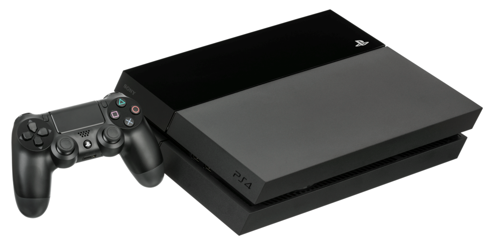
• Xbox One by Microsoft (2013) selling approximatly 51 million units. This console is the successor to the Xbox 360, and marketed as the “all-in-one entertainment system”, hence the word “One” in its name. It has an emphasis on cloud computing, social networking, and screen recoding gameplay or live-streaming. Its games are backward compatable with support on Windows 10 devices. Aside from playing games, this console supports playing movies, live televison braocasting, and includes a Kinect sensor that has improved motion tracking along with voice and face recognition.
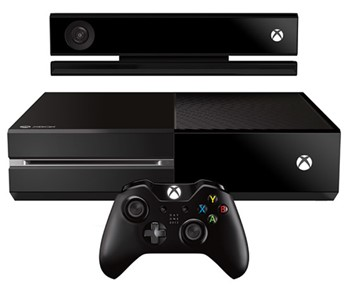
• Nintendo Switch by Nintendo (2017) selling 79.87 million units. This console is a tablet that can be used on its own or connected to a TV and be used as a home console, making it a hybrid console. It have a wireless controller, the Joy-Con, that has features such as motion sensing, tactile feedback, user input, and the basic controls. It also has online support for digital game distribution via the Nintendo eShop, as well as physical game ditrubution in the form of flash-based ROM catridges. This console skyrockted after the poor sales of its predecessor the Wii U, due to the fact that they had a big game library from first-party, third-party, and intdependent developers.
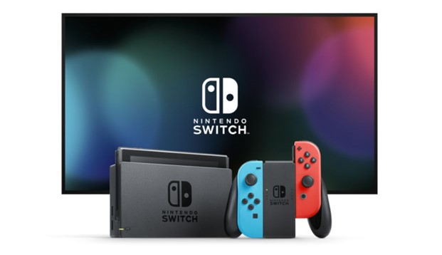
• PlayStation 5 by Sony (2020) selling 4.5 million units. It is the successor to the PlayStation 4. It was released in the same month as the Xbox Series X. This console was released as two platforms, one with an “Ultra HD Blu-ray-compatible otical disc drive”, and the other as a “Digital Edition lacking the drive” for players that prefer digitally downloading their games.
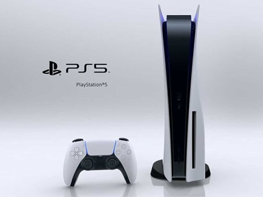
• Xbox Series X by Microsoft (2020) selling 2.8 million units. This console has high end hardware supporting the display of up to 8K resolution. It is backwards compatible with many previous Xbox games, controllers and accessories.
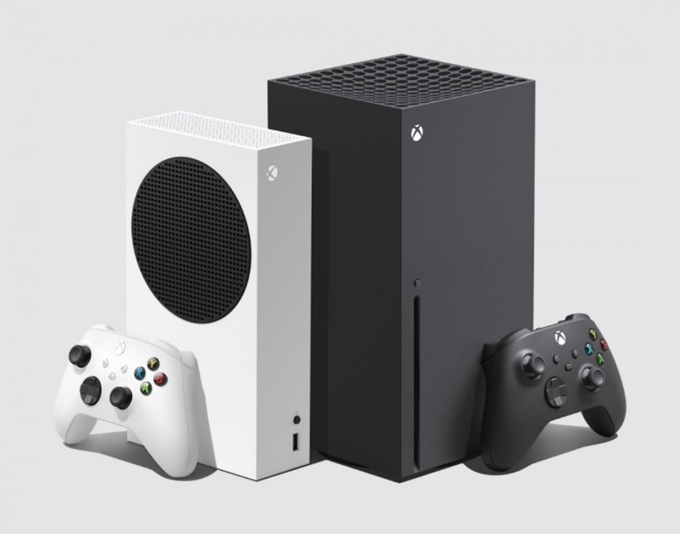